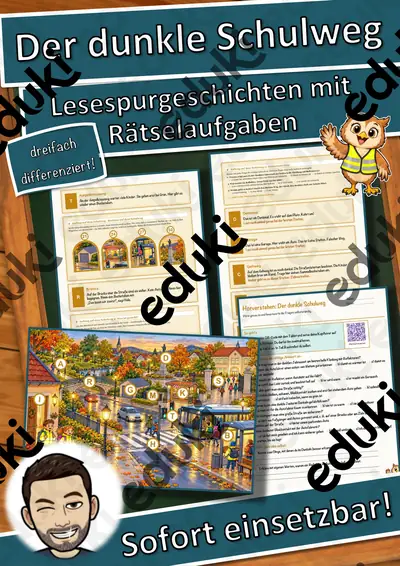
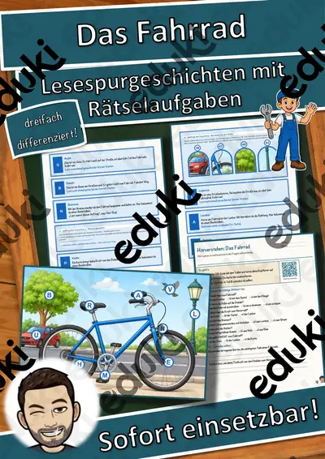

Verkehr und Schulweg: Arbeitsblätter für Klasse 1–4 (Sachunterricht)
Verkehrserziehung ist in allen Ländern fester Bestandteil der Grundschule. Kinder lernen Verkehrszeichen, sichere Schulwege und das Verhalten als Fußgänger oder Radfahrer; später treten Mobilität und Umwelt hinzu.
Die Begriffsliste dieser Einheit: Verkehrszeichen, Ampel, Zebrastreifen, Fahrrad, Schulweg und Verkehrsmittel.
Im Fach Sachunterricht gehört das Thema nach den Lehrplänen der Länder zum festen Programm, überwiegend in der Grundschule. Die Kinder erklären Verkehrsregeln, erkennen Gefahrenstellen und planen einen sicheren Schulweg.
Eine Reihe zu Verkehr und Schulweg lässt sich so gliedern: erst Verkehrszeichen erarbeiten, dann Ampel anwenden, später Fahrrad und Schulweg vertiefen. Zu jedem Material gehört eine Musterlösung, die Korrektur und Selbstkontrolle erleichtert. Zur Differenzierung eignen sich die Lesespurgeschichten mit ihren drei Niveaustufen.
Die Auswahl zum Thema umfasst derzeit 8 Titel, zum Beispiel Der dunkle Schulweg, Das Fahrrad und Sicher unterwegs im Verkehr. Dazu zählen 3 Lesespurgeschichten und 4 Lückentexte mit Hörverstehen für Klasse 3–5. Ein Rundgang um die Schule mit Fotoauftrag zu Verkehrszeichen bringt echte Beispiele in den Unterricht.
Das gehört zum Thema
Passende Arbeitsblätter und Materialpakete

Der dunkle Schulweg – Lesespurgeschichte mit Rätselaufgaben (Klasse 3)

Das Fahrrad – Lesespurgeschichte mit Rätselaufgaben (Klasse 4)

Sicher unterwegs im Verkehr – Lesespurgeschichte mit Rätselaufgaben (Klasse 5)

Helm Lückentext mit Wortspeicher Hörverstehen und Suchsel

Fahrrad Lückentext mit Wortspeicher Hörverstehen und Suchsel

Eisenbahn Lückentext mit Wortspeicher Hörverstehen und Suchsel

Ampel Lückentext mit Wortspeicher Hörverstehen und Suchsel

Lernampel, Feedback-Ampel
Häufige Fragen
Für welche Klassenstufe passen die Arbeitsblätter zu Verkehr und Schulweg?
Die 8 Materialien zu diesem Thema sind für Klasse 3–5 ausgelegt, die meisten davon für Klasse 5. Einzelne Titel lassen sich mit Anpassung auch eine Stufe darunter oder darüber einsetzen.
Welche Inhalte decken die Materialien zu Verkehr und Schulweg ab?
Die Materialien arbeiten an Verkehrszeichen, Ampel und Zebrastreifen und gehen dann weiter zu Fahrrad, Schulweg und Verkehrsmittel. Vorab lohnt ein Blick in den Lehrplan des eigenen Bundeslandes.
Wie setze ich Verkehr und Schulweg im Unterricht ein?
Beginnen Sie mit einem Einstieg zu Verkehrszeichen und ergänzen Sie nach Bedarf. Ein Rundgang um die Schule mit Fotoauftrag zu Verkehrszeichen bringt echte Beispiele in den Unterricht.
Mehr Material nach Fach und Klasse
Verwandte Lehrplanthemen
- Bauernhof und Nutztiere (Sachunterricht, Klasse 1–4)
- Berufe und Berufswahl (Sachunterricht, Klasse 1–10)
- Dinosaurier und Urzeit (Sachunterricht, Klasse 1–5)
- Geld und Konsum (Sachunterricht, Klasse 2–10)
- Gesunde Ernährung (Sachunterricht, Klasse 1–8)